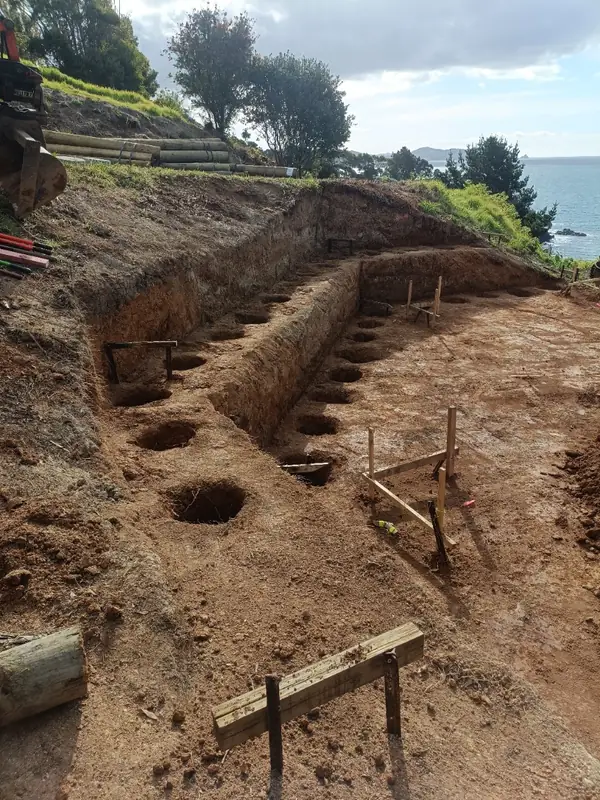
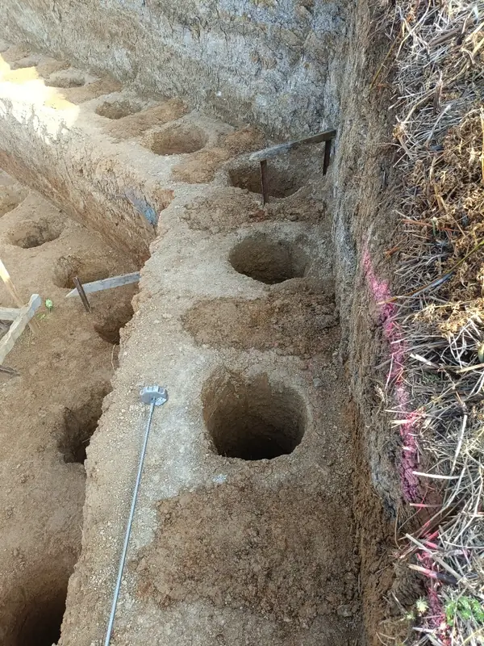
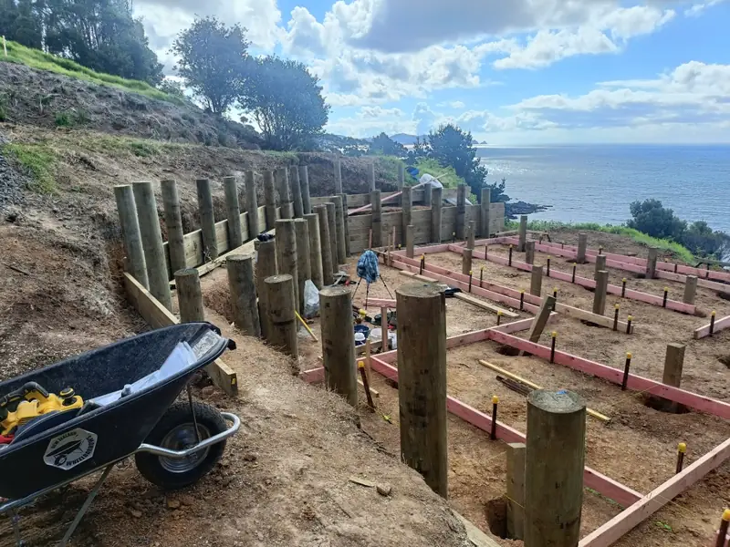
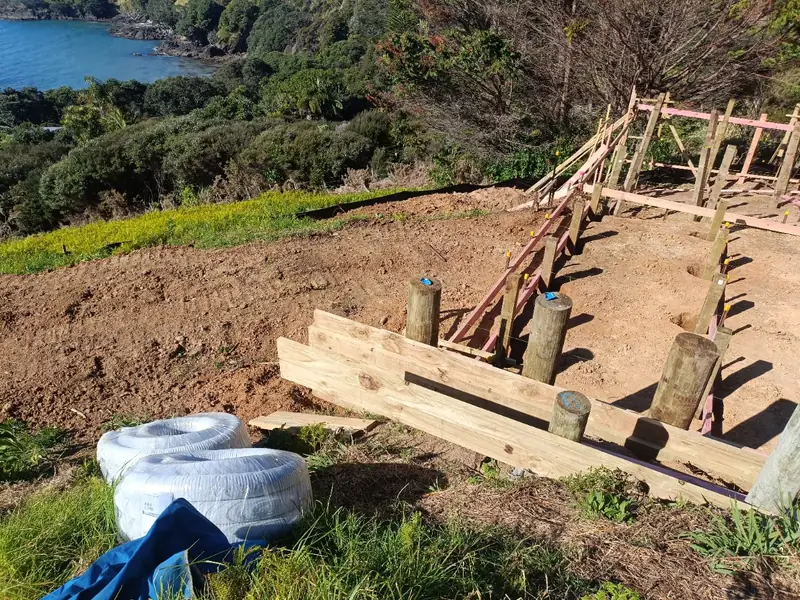

Does Your Retaining Wall Need an Engineer?
A guide for Northland property owners. Most retaining walls that hold back more than 1.5 m of ground need building consent and an engineer's design. A shorter wall can need one too, if it carries a fence, a driveway, a building or sloping ground. This page explains the rule, shows the common wall types, and covers garden walls and fences.
When Does a Retaining Wall Need to Be Engineered?
The Building Act 2004 (Schedule 1) lets you build a retaining wall without building consent if it retains no more than 1.5 m depth of ground and carries no surcharge. A surcharge is any load on top of or behind the wall beyond the soil itself. If either condition fails, the wall needs consent, and council will want an engineer's design to grant it.
Exempt walls still have to meet the Building Code. If a low wall fails and damages a neighbour's property, the owner carries the risk. So even an exempt wall on a difficult site is worth a quick engineering check.
Common surcharges that bring a low wall into consent
Vehicles near the top of a wall push extra load onto it. Driveway cuts are the most common reason a short wall needs design in Kerikeri and Paihia.
A house, garage, shed or deck footing close behind the wall loads the retained ground. See foundation design if you are building near a wall.
Ground that keeps rising behind the wall adds weight, so it counts as surcharge. This is common on Bay of Islands hillside sections.
Two low walls close together can act as one tall wall, because the upper wall loads the lower one. Council may assess them together.
Wind on a fence pushes on the wall it is fixed to. See fences on retaining walls below.
Water is not a legal surcharge, but trapped water is the most common cause of wall failure. Soft clay and old slips also need engineering input.
Quick check
| Your wall | Building consent? | Engineer? |
|---|---|---|
| Retains up to 1.5 m, flat lawn or garden behind, nothing on top | Usually exempt | Not required. Worth a check on soft or wet ground |
| Retains up to 1.5 m, driveway, parking or building behind | Yes | Yes |
| Retains up to 1.5 m, fence fixed on top | Often | Usually. Ask before you build |
| Retains up to 1.5 m, ground slopes up behind | Yes | Yes |
| Retains more than 1.5 m | Yes | Yes |
| Replacing a leaning or failing wall | Depends on the new wall | Recommended, so the new wall fixes the cause |
The 1.5 m is the depth of ground retained, measured from the ground in front of the wall to the ground behind it. It is not the height of the wall material. This table is general guidance. FNDC, WDC and KDC make the final call on consent for each site.
Fences on Retaining Walls
Many Northland owners want a boundary fence on top of a retaining wall. Wind blowing on a solid fence acts like a lever, and the wall below has to resist it. A 1.8 m solid fence on a 1 m timber wall can more than double the bending load at the base of the wall's posts.
There are three common ways to handle it.
- Design the wall for the fence. We size the wall posts for both soil and wind, and the fence posts become part of the wall. This is the tidiest option for new walls.
- Set the fence back. A fence on its own posts, set well back from the wall, puts less load on it. The gap you need depends on the wall height and soil.
- Use a lighter fence. Open pool-style or wire fences catch far less wind than solid timber or panel fences.
Adding a fence to an existing wall is the risky case. The wall was probably not designed for it. Send us a photo and the wall height before you build, and we can tell you whether it needs checking.
Garden Retaining Walls
Low garden walls, raised beds and lawn terraces are usually exempt. They retain well under 1.5 m and carry nothing but plants and soil. A landscaper or handy owner can build these without an engineer.
A garden wall stops being simple when any of these apply.
- The wall sits below a driveway, path used by vehicles, or building
- You plan two or more terraces stepping up a slope
- The ground behind is wet, soft clay, or has slipped before
- The wall is near a boundary and a failure would reach the neighbour
- The wall will have a fence or pool fence on top
If one of those fits your garden wall, a short site visit costs far less than rebuilding a collapsed wall.
Common Retaining Wall Types in Northland
The right wall depends on height, ground, access and budget. These are the types we design most often.
Timber pole walls
Treated timber poles set in concrete, with timber lagging between them. This is the most common wall in the Far North because the materials are local and the build is quick.
Suits driveway cuts, house platforms and garden walls. Post depth and spacing need design once the wall carries a surcharge.
Timber crib walls
Interlocking timber cribs filled with free-draining gravel. The weight of the fill holds the slope back.
Suits long walls on sites with room for a wide base. They drain well, which helps on wet Northland clays.
Concrete block (segmental) walls
Dry-stacked concrete blocks, often with geogrid layers reaching back into the fill. They give a clean, finished look.
Suits garden terraces and feature walls. Taller walls need geogrid design and good compaction.
Reinforced masonry walls
Concrete masonry blocks filled with grout and steel reinforcing, on a concrete footing.
Suits walls under buildings, garages and driveways where space is tight and loads are high.
Gabion walls
Wire baskets filled with rock. They are heavy, flexible and drain freely.
Suits stream banks, coastal edges and rural sites, and works with erosion control.
Poured concrete walls
Cast-in-place reinforced concrete. They are the strongest option and the most expensive.
Suits basements, tall walls and walls that form part of a building's structure.
Typical Northland Retaining Wall Jobs
A new driveway is cut into a slope, leaving a 1–2 m bank. A timber pole wall designed for vehicle load holds the cut, with a subsoil drain behind it.
A sloping section is cut and filled to make a flat building site. The walls are designed with the geotechnical report and the house foundations, so all three work together.
A steep backyard is turned into usable lawn with two or three low terraces. Spacing between terraces decides whether they can be built as exempt walls.
A wall along the boundary carries a 1.8 m privacy fence. The wall posts are sized for soil and wind together.
An old wall leans after years of trapped water. The replacement adds proper drainage so the same failure does not repeat.
Walls create level lots and access roads on sloping land, designed as part of the subdivision engineering package.
Recent job — Tauranga Bay, Far North
A new house at Tauranga Bay needed a timber pole retaining wall cut into the slope behind it. Before any concrete went in, we shear vane tested the ground in every drilled pole hole. Each hole had to reach the strength the wall design relied on. FNDC then inspected the pole foundations before the pour.




Signs Your Retaining Wall Is Failing
Call an engineer if you see any of these. Early repairs are much cheaper than a rebuild after collapse.
- The wall leans forward or bulges in the middle
- Cracks open in the ground, path or driveway behind the wall
- Timber posts or lagging are rotting, split or pulling away
- Water seeps through the face, or the ground behind stays soggy
- Soil spills out at the base or between boards
Retaining Wall Questions
Do I need consent for a retaining wall under 1.5 m?
Not usually, as long as it carries no surcharge. A driveway, building, fence or sloping ground behind the wall brings it back into consent. The wall must still meet the Building Code either way.
How is the 1.5 m measured?
It is the depth of ground the wall holds back. Measure from the ground level in front of the wall to the ground level behind it. A wall with posts sticking up above the soil does not count those posts.
Can I put a fence on my retaining wall?
Yes, if the wall is designed for it. Wind on the fence adds load, so an existing wall may need checking first. A lighter fence or one set back from the wall reduces the problem.
Do you build retaining walls?
No. We design them, provide the consent documents, and can inspect the build. Your builder or a retaining wall contractor does the construction. We work with contractors across the Far North and can suggest one.
What does retaining wall design involve?
We visit the site, check the ground, and design the wall, its footing and its drainage. For consent you get drawings, calculations and a PS1 producer statement. See retaining wall design for the full service.
How much does it cost?
Every project is different, so we quote each one. Send us your details and we'll give you a free, no-obligation quote.
Which councils do you work with?
Far North District Council, Whangarei District Council and Kaipara District Council. We know their consent requirements for retaining walls.
Not Sure If Your Wall Needs an Engineer?
Send us a photo, the height of ground you want to hold back, and what sits behind it. We'll tell you whether it needs consent and design. Based in Kerikeri, working across Northland.